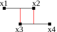
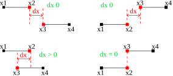

Intervals merge
Intervals merge
Two simple algorithms of interval merge, which I designed yesterday while was sick :)
!First (and simplest) algorithm
First one is very dumb and it is based on the check of edges projection: if projected edge (node) is contained in another interval then we have solid interval as result (we must merge them), elsewhere - keep original intervals, see picture:

Python implementation:
# predicat: `x` is contained in (x0, x1) c = lambda x, x0, x1: x0 <= x <= x1 # merge-I def m1(i1, i2): i1, i2 = map(isort, (i1,i2)) sx = isort(i1 + i2) x1, x2 = i1; x3, x4 = i2 if c(x1, x3, x4) or c(x3, x1, x2) or c(x2, x3, x4) or c(x4, x1, x2): return (sx[0], sx[-1]) else: return ((sx[0], sx[1]), (sx[2], sx[3]))
where isort() is sort function, which returns tuple instead of list:
# sort interval `i` isort = lambda i: tuple(sorted(i))
Don't forget that first is sort of intervals (normalizing) and then sort of
all points - see sx.
!Second algorithm
Second is more interesting. It is based on gap detection: we try to find - is there gap between intervals? If it exists then we return 2 intervals as is, otherwise - merge them into one by get (first, last) of sorted points.

where dx is difference between 2nd point of 1st interval - 1st point of 2nd
interval (intervals are sorted, so "1st" and "2nd" means index in order), i.e.
D<sub>x</sub> = I<sub>12</sub> - I<sub>21</sub>
<div style="background-color:white;padding:5px;font-family:monospace">
X<sub>s</sub> = {X<sub>1</sub> ≼ X<sub>2</sub> ≼ X<sub>3</sub> ≼ X<sub>4</sub>}<br/>
I<sub>s</sub> = {I<sub>1</sub> ≼ I<sub>2</sub>}<br/>
<br/>
I<sub>12</sub> - I<sub>21</sub> ≥ 0 > RESULT : [X<sub>1</sub>, X<sub>4</sub>]<br/>
I<sub>12</sub> - I<sub>21</sub> < 0 RESULT := [[X<sub>1</sub>,
X<sub>2</sub>], [X<sub>3</sub>, X<sub>4</sub>]]
</div>
where I is interval (pair of 2 X points).
# Tuple 0st item selector p1 = lambda p: p[0] # merge-II def m2(i1, i2): i1, i2 = map(isort, (i1,i2)) sx = isort(i1 + i2) si = sorted((i1, i2), key=p1) if si[0][1] - si[1][0] >= 0: return (sx[0], sx[-1]) else: return ((sx[0], sx[1]), (sx[2], sx[3]))
Test it:
# assert def ass(a, b): if a != b: raise AssertionError('%r != %r' % (a,b)) # asserts algo. m1 ass(((1,2), (10,20)), m1((1,2), (10,20))) ass(((1,2), (10,20)), m1((2,1), (20,10))) ass((1,20), m1((2,1), (2,20))) ass((1,20), m1((10,1), (2,20))) ass((1,20), m1((20,1), (5,20))) ass((1,20), m1((20,1), (5,10))) ass((1,20), m1((20,1), (1,10))) ass((-1,20), m1((20,1), (-1,10))) ass((-1,20), m1((20,1), (-1,1))) ass(((-1,0), (1,20)), m1((20,1), (-1,0))) ass((1,20), m1((2,10), (20,1))) ass(((1,2), (10,20)), m2((1,2), (10,20))) ass(((1,2), (10,20)), m2((2,1), (20,10))) ass((1,20), m2((2,1), (2,20))) ass((1,20), m2((10,1), (2,20))) ass((1,20), m2((20,1), (5,20))) ass((1,20), m2((20,1), (5,10))) ass((1,20), m2((20,1), (1,10))) ass((-1,20), m2((20,1), (-1,10))) ass((-1,20), m2((20,1), (-1,1))) ass(((-1,0), (1,20)), m2((20,1), (-1,0))) ass((1,20), m2((2,10), (20,1))) print 'ok.'
These algorithms are based on metrics: if we can map nodes to natural numbers, we can apply algorithms to intervals of such nodes, For example, nodes can be cities, and metric will be distance from some center, e.g. capital. This means that it's easy to merge path fragments where path nodes are cities. You can imagine any other case satisfied such condition.